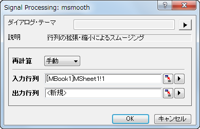

スムージング
スムージング
概要
スムージングは、信号からノイズを除去するために使用される、一般的なテクニックです。Originは、隣接平均、Savitzky-Golay、パーセンタイルフィルタ、FFTフィルタなどのいくつかのスムージング手法をサポートしています。さらに、ウェーブレットをベースにしたツールも利用可能です。
行列データに対しては、Originは2つの方法によるスムージングを提供しています。もし、列または行の数が32より少ない場合、行列を拡張し、その後実際のサイズに縮小します。31よりも大きい場合は、最初に縮小する場合、行列は、その後拡大します。
学習する項目
このチュートリアルでは、以下の項目について説明します。
- 様々な手法によるスムージング
- ウェーブレットで信号をスムージングする
- 3D曲面をスムージングする
様々な手法によるスムージング
- 新しいワークブックを用意します。ヘルプ: フォルダを開く: サンプルフォルダを選択して、サンプルフォルダを開きます。このフォルダ内のSignal ProcessingサブフォルダにあるSSignal with High Frequency Noise.dat ファイルを探します。空のワークシートにファイルをドラッグアンドドロップしてインポートします。
-
- ワークシートのB列を選択します。メニューから解析：信号処理：スムージングと選択し、（もしこの機能を以前使用したことがある場合は、さらにダイアログを開くを選択します）スムージング: smooth ダイアログを開きます。
隣接平均法
隣接平均法は、データの広範な平滑化を実行します。
- 方式に隣接平均法を選択します。ウィンドウ内のポイント数を100に、境界条件を周期的にします。自動プレビューにチェックを付け、右パネルでプレビューを表示します。
- OK をクリックして、結果を作成します。
Savitzky-Golay
Savitzky-Golay法は、信号ピークの形状を保存するのに適しています。
- 再度B列を選択します。解析メニューにて、信号処理：スムージング：ダイアログを開く...を選択します。
- スムージングダイアログボックスにて、方式をSavizky-Golayとします。 ウィンドウ内のポイント数を100に、境界条件を周期的に、多項式次数を3とします。
-
- OKをクリックします。
パーセンタイルフィルタ
- 再度B列を選択します。解析メニューにて、信号処理：スムージング：ダイアログを開く...を選択します。
- 方式をパーセンタイルフィルタにします。ウィンドウ内のポイント数を100に、境界条件を周期的に、パーセンタイルはデフォルト設定の50とします。
-
- OK ボタンをクリックします。
FFTフィルタ
- 再度B列を選択します。解析メニューにて、信号処理：スムージング：ダイアログを開く...を選択します。
- 方式をFFTフィルタにします。ウィンドウ内のポイント数を100にします。
- OK をクリックして、ダイアログを閉じます。
- これで、ワークシートに4つの結果データ列が追加されます。列C、D、E、Fを選択して、メニューの作図>基本の2Dグラフ：折れ線と選択してこれら4つのデータののグラフを作図します。
-
- 4つの方法の結果を比較すると、Savitzky-Golay法がデータ内のピークを保存するのに最適で、一方FFT フィルタ法はピークの保存には適さないことがわかります。
ウェーブレットを用いたスムージング
- 新しいワークブックを用意します。ヘルプ: フォルダを開く: サンプルフォルダを選択して、サンプルフォルダを開きます。このフォルダ内のSignal ProcessingサブフォルダにあるSSignal with High Frequency Noise.dat ファイルを探します。空のワークシートにファイルをドラッグアンドドロップしてインポートします。
-
- B列を選択して、解析：信号処理：ウェーブレット：スムージング を選択し、スムージング：wtsmoothダイアログを開きます。
- ダイアログで、ウェーブレットの種類をDB6にし、カットオフ値（％）を98にします。ダイアログの自動プレビューチェックボックスにチェックを付け、右パネルでプレビューできるようにします。
-
- OK をクリックしてダイアログを閉じ、レポートを作成します。
- 元のデータと比べるために、全ての列を選択して作図>基本の2Dグラフ：折れ線と選択してグラフを作図します。
-

行列をスムージング
- 新しい行列ブックを開きます。
- データ：ファイルからインポート：イメージファイルを行列にインポートを選択してサブフォルダ<Origin Installation Directory>\Samples\Image Processing and Analysis\の下の画像scale.jpgをインポートします（impImageダイアログボックスが開いていれば、デフォルト設定のままOKを押します）。
- Originのスムージングは画像には適用できないので、まず画像を行列データに変換する必要があります。メニューから、イメージ：変換：データに変換を選択します。デフォルト設定のまま、OKボタンをクリックします。
- 変換された行列データをアクティブにし、メニューから表示：イメージモードを選択して行列データをイメージとして表示します。
-
- 解析：信号処理：スムージングを選択してスムージングを行います。スムージング：msmoothダイアログが開きます。
- 
- 初期設定のまま、OKボタンをクリックします。メニューから表示：イメージモードを選択して結果を表示します。
-